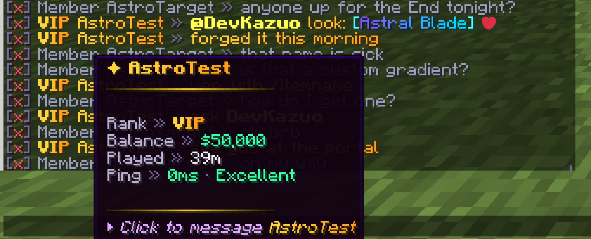

Chatalyst is a chat plugin for Minecraft servers. It makes every message look good, keeps chat clean and gives your staff the tools to look after the community. It replaces the usual pile of separate chat, filter and moderation plugins with one jar that is set up in minutes.
You do not need to be technical to use it. A fresh install already gives you a styled chat, channels, mentions, private messages and a spam and swear filter. Everything else is optional and comes switched off, so your server only runs what you choose.

What you get on day one
These are on as soon as you install Chatalyst:
| Feature | What it does for you |
|---|---|
| Chat formats | Each message shows the player's rank, name and text in a clean style. Hovering a name shows rank, party, money, time played and ping. |
| Channels | Separate rooms for global, staff, local (radio), region and party chat. |
| Mentions | Writing a player's name highlights it and plays a sound for them. |
| Private messages | /msg, /reply and /ignore. |
| Filter and anti-spam | Blocks spam, flooding, caps abuse, swearing and hidden-character tricks. |
| Rules | Ready-made rules that stop advertising and server IPs. |
| Chat log | A daily log of chat so staff can check what happened. |
| Warning points | Infractions add points; too many points mute or kick automatically. |
Optional extras
Turn these on only if you want them. Turn on extras shows how, and /cht features lists them in game:
- Moderation: staff suite (bans, freeze, vanish), reports, anonymous mode, anti-bot, command blocker.
- Community: announcements, mail, tags and titles, nametags, giveaways, marriage, market, gifts.
- Connections: Discord bot, store and Tebex, proxy networks, live translation.
What you need
| Requirement | Details |
|---|---|
| Server | Paper, Purpur or Folia (with some limits). Spigot is not supported. |
| Minecraft | 1.21.1 to 26.3. |
| Java | Java 21 for Minecraft 1.21.1 to 1.21.11. Java 25 for Minecraft 26.1 and newer. |
| Other plugins | None required. LuckPerms, PlaceholderAPI, Vault and others are used when present. |
| Internet | Needed on the first start, when Paper downloads the libraries Chatalyst uses, and to check your license. |
See Compatibility & conflicts for the full list and how Chatalyst works next to other plugins.
Where to go next
- Install in 5 minutes.
- Your first chat: change how chat looks, step by step.
- Turn on extras you want.
Need help? Join the Discord community at https://discord.gg/uWTNeBmMT3.